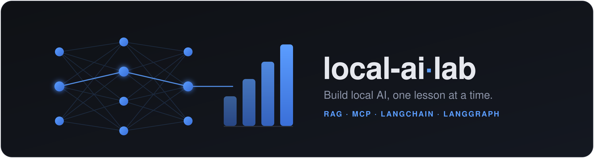

local-ai-lab teaches how modern AI actually works by building it from scratch — small, readable programs you run on your own machine. It's one piece of a broader body of work: local-first, developer-focused, AI-native tools.
local-ai-lab is built and maintained by Nik Reljin — an engineer who builds local-first, developer-focused AI tools, and who likes nothing more than teaching how they work. A former college educator with a soft spot for new technologies, he now helps engineers build with modern AI through team trainings, one-on-one mentoring, talks and workshops, and self-paced courses like this one.
The approach is the same whoever's in the room: build the thing from scratch first. Once you've written a retriever, a chunker, and a provider adapter by hand, every framework that wraps them stops looking like magic — you can read it, judge it, and decide when it's worth the dependency. Every lesson here is designed to leave you with that understanding, not just a working snippet.
The course grew out of a simple preference that runs through everything below: software should be understandable, should run on your own hardware, and should treat AI as a primitive you control — not a remote black box. The projects span model finetuning and compression, agent and inference tooling, AI-assisted documentation, and the everyday developer utilities that hold a workflow together.
Built and maintained by Nik Reljin. The full catalog lives on GitHub; the selection here is deliberately small — the ones most relevant to the themes of this course.
This site uses GoatCounter for privacy-friendly usage statistics: no cookies, no persistent identifiers, and no cross-site tracking. It records aggregate pageviews with country-level geography (derived from your IP address transiently at ingest, then discarded rather than stored), plus a few anonymous interaction events — outbound-link and PDF (cheat-sheet) clicks, and how far through a lesson's slides a visit gets. With no cookies or persistent identifiers, there's no consent banner to click through. See GoatCounter's privacy policy.